2024 Recap¶
Table of Contents¶
Disclaimer: the content of this post is a reflection of my life journey and not specific to my work at JPMorganChase.
You can read my 2023 Recap here.
This Year’s Theme¶
While writing this recap, I found myself thinking the words, “I finally got organized and†a number of times. I felt a sense of cumulative momentum this year that came from building on prior knowledge and experience.
🔠back to top
Work¶
I continued as a Python/Django software engineer doing task orchestration and distributed systems engineering. The year went well, including a very positive end-of-year review.
🔠back to top
January¶
Los Angeles 2023 Trip Recap¶
The dream Los Angeles trip that I took in early December 2023 turned into a dream recap filled with my favorite stories, photos, and videos.
My most-viewed Los Angeles videos:
🔠back to top
Kinesis Advantage360¶
In 2020, I bought a Kinesis Freestyle Pro split keyboard. Although the keyboard itself was fairly traditional, I loved the 20’’ separation cord and tenting. The unique Kinesis Advantage2 keyboard had long piqued my curiosity as well. When Kinesis came out with the Advantage360 split version with tenting, I finally pulled the trigger.
This keyboard is the most comfortable that I have ever used. The contoured shape shortens reach and the thumb presses heavily-used keys, instead of the pinky.
Having said that, the layout is similar, but not exactly the same as a regular QWERTY, and I do not recommend using it if you have to “hunt and peck.†Also, like the Freestyle Pro, it is one-size fits all, and slightly larger for a woman’s smaller hands.
 Kinesis Advantage360
Kinesis Advantage360
🔠back to top
DjangoCon US 2023 Recap Popularity¶
I published a DjangoCon US Recap in October 2023. It was featured in Django News Newsletter Issue 205. I learned in January that the recap had been Django News Newsletter’s top article for months.
🔠back to top
February¶
Spring Fun for My Nieces¶
I want to start doing random, fun things for my nieces. I decided to buy them some board games.
Games purchased:
Guess Who?
Candy Land
Scrabble
Clue
I had countless hours of fun playing these when I was a kid.
We FaceTimed while they opened the box. They immediately began playing and loved them.
🔠back to top
CFP Connect¶
Last year, I obtained sponsorship from a JPMorganChase Managing Director to start a monthly departmental meetup in Plano that became known as PS Connect, then CFP Connect. This year, it grew to be a quarterly event typically attended by 100+ plus people, filled with knowledge-sharing, networking, and fun, and supported by top department leadership across Plano.
It was a pleasure to continue to be part of the core team organizing the events.
🔠back to top
March¶
DjangoCon US Talk Topics Inspiration List¶
Every year, fellow DEFNA Board Member Jeff Triplett publishes a list of talk topics he’d like to learn more about at DjangoCon US. He also encourages other DEFNA Board Members to publish their own.
Last year, I finally got organized and created a Talk Topics Inspiration List for DjangoCon US 2023. This year, I created a Talk Topics List for DjangoCon US 2024.
Our talk submission stats since I began publishing my list:
2022: 152
2023: 189
2024: 194
I am confident that my list played a major role in the increase in submissions. I am really proud of that!
My list was featured in Django News Newsletter Issue 222, along with Jeff’s list and DjangoCon US Program Chair Drew Winstel’s list.
🔠back to top
DjangoCon US Website Design¶
As a DEFNA Board Member, I help oversee DjangoCon US, including the website design. I am also an avid photographer.
During DjangoCon US 2023, I walked around downtown Durham and took some photos of the quirky artwork there. During the always-fun website design iteration process, I shared these photos with the website team.
Snapshots I took in downtown Durham
I am super excited that my photos helped inspire this year’s theme. The website design makes me smile, and I hope it makes you smile too!
 A shoutout from our amazing designer Joni Trythall of YupGup!
A shoutout from our amazing designer Joni Trythall of YupGup!
Joni did a DjangoCon US Design Reflection featuring all of our designs since 2018.
They are so beautiful!
Thank you to Joni for a special recognition at the end of her post.
🔠back to top
Conference Snapshots¶
After years of collecting conference snapshots, I got organized and created a page of my Favorite Conference Snapshots and the stories behind them, as well as a page of Speaker, Board, and Organizer Photos.
🔠back to top
Family Tragedy¶
On April 15, 2022, my Aunt Judy died of pancreatic cancer. On March 29 of this year, my Uncle Edward passed away too. He had been suffering from probable Lyme-disease induced dementia and took a fall, but ultimately, he died of a broken heart.
A part of me never believed this day could happen, and I wished it never would. Uncle Edward and Aunt Judy were truly larger than life.
 My aunt and uncle in better times
My aunt and uncle in better times
His life was not so easy after Aunt Judy died. He missed his Judy. He died peacefully, and I am comforted by the fact that he had a smile on his face.
You can learn more about him in his obituary or the replay of his funeral.
He was one-of-a-kind. He was a brilliant engineer and businessman and the best brother my mother could have ever asked for.
My mom put her heart into providing the funeral music. He would have absolutely loved it.
My uncle was an avid hunter. My cousin Andrea Markel Hastings organized one last duck call for him at the cemetery by a few of his fellow hunting buddies.
There’s something in my eye.
 Beautiful sympathy flowers from DEFNA… in a strange coincidence, my cousin pointed out that the roses were one of my uncle’s favorite colors
Beautiful sympathy flowers from DEFNA… in a strange coincidence, my cousin pointed out that the roses were one of my uncle’s favorite colors
🔠back to top
April¶
Lemurs at Tanganyka Wildlife Park¶
Because our DjangoCon US host city Durham, North Carolina has the largest population of lemurs outside of Madagascar, we featured a “friendly†lemur on our website last year.
 A “friendly†lemur with a smile on its face
A “friendly†lemur with a smile on its face
After years of hearing about Tanganyika Wildlife Park in Goddard, Kansas, mom and I decided to go. I had no idea until I got there that you can feed lemurs. They were so soft and gentle. I loved spending time with these real-life, friendly lemurs!
 Mom, me, and the lemurs!
Mom, me, and the lemurs!
 Me feeding a lemur a craisin out of my palm! It’s holding my hand.
Me feeding a lemur a craisin out of my palm! It’s holding my hand.
🔠back to top
JPMorganChase Eclipse Watch Party¶
On my way back to Plano after my uncle’s funeral, I got stuck in eclipse travel. I arrived back in Plano in time for the eclipse, but hadn’t had time to plan. Fortunately, JPMorganChase had me covered. Eclipse glasses were handed out around campus, and we convened outside for a watch party. It’s hard to put into words what it was like to watch the eclipse with what must have been thousands of co-workers.
Here is a little taste of the fun. This was a small portion of the crowd. Clouds intermittently covered the sun, but parted in time for the totality. The crowd cheered and Total Eclipse of the Heart played in the background. Super fun!
🔠back to top
PyTexas 2024¶
PyTexas 2024 took place in Austin, Texas from April 19-21.
PyTexas has been on my bucketlist for years, and I finally went.
I met Jason Koo at DjangoCon US 2022 in San Diego where he generously helped as an organizer. It was great to see him again, and I look forward to learning more about Neo4j Graph Database! On the bright, sunny, second day of PyTexas, he invited me to be in this photo.
Nick, Dan, Jason, Josh, me, Carol
It was a pleasure to get a snapshot next to my incredible friend Carol Willing. She had given an amazing keynote that morning. It is a must watch! I was also standing next to Josh Cannon who read the very clever Oh the (Methods) You Can (Make) book by Dunder Seuss.
All of the videos are available on the PyTexas Youtube channel.
🔠back to top
Austin Sightseeing¶
Franklin’s Barbecue¶
On a whim, I went straight from the airport to Franklin’s Barbecue for some of their brisket. Many believe it to be the best in the United States. The meat was melt in your mouth with very little fat. It was the best brisket that I’ve ever had, but I waited in line for an hour and a half to get it. On the bright side, I chatted with an incredibly nice man in line, and he bought my meal.
Franklin’s interior
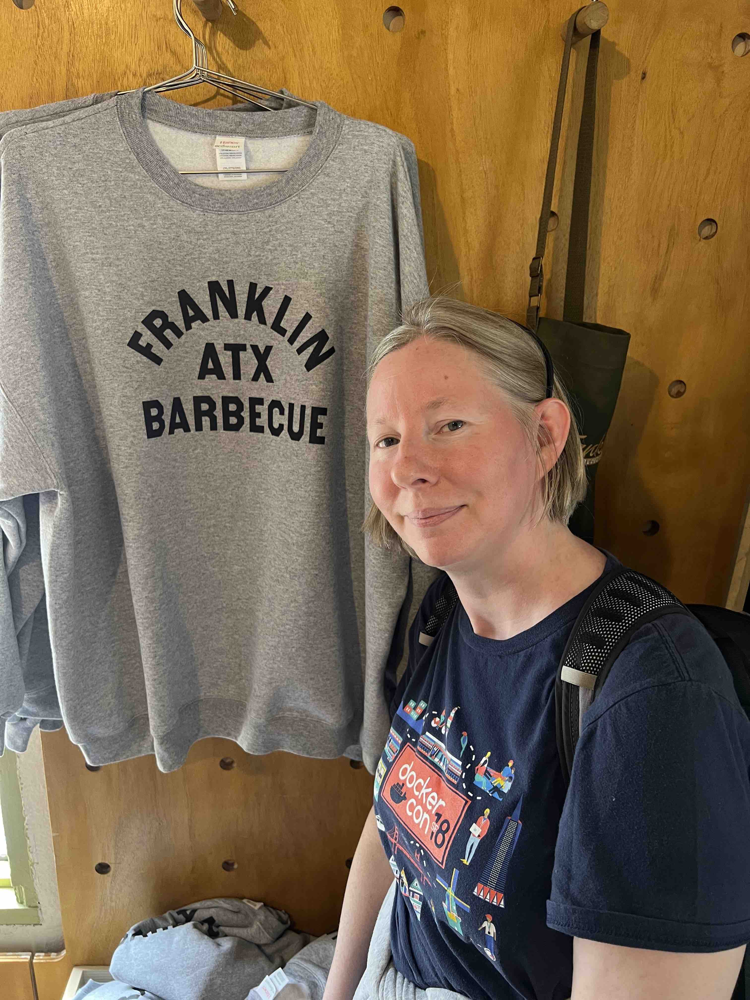 Finally inside Franklin’s
The meal!
🔠back to top
Downtown Austin¶
On Friday and Saturday, I explored the downtown.
 View of Block 185 from Lady Bird Lake Trail
View of Block 185 from Lady Bird Lake Trail
 Saint Mary Catholic Cathedral
Saint Mary Catholic Cathedral
Texas State Capitol
🔠back to top
Lyndon B. Johnson Presidential Library¶
On Saturday, I visited the LBJ Presidential Library.
 Replica Oval Office
Replica Oval Office
The library included an exibit about the Kennedy assassination. Hear the commentary.
🔠back to top
Bruce Springsteen Foundation Exhibit¶
As I walked around the LBJ Presidential Library, I nearly missed the premier of an incredible exhibit curated by the Bruce Springsteen Archives called Music America: Iconic Objects from America’s Music History. The exhibit featured “more than one hundred objects representing the best of American music, spanning decades and genres.â€
It was by far the highlight of my visit and worth the price of admission alone.
A few of my personal favorites:
The history of African influence on American music
Stevie Ray Vaughan’s “Number One†Guitar
Prince’s shirt from Purple Rain and “Cloud†guitar
Ella Fitzgerald’s dress
Elvis Presley’s 1956 Tupelo Concert shirt
Beatles’ Shea Stadium concert ticket
John Coltrane’s Saxaphone
Buddy Holly’s suit and letter to his mother
B.B. King’s Lucille guitar
Dizzie Gillespie’s trumpet
The first rock & roll records (“The Fat Man†and “Rocket 88â€)
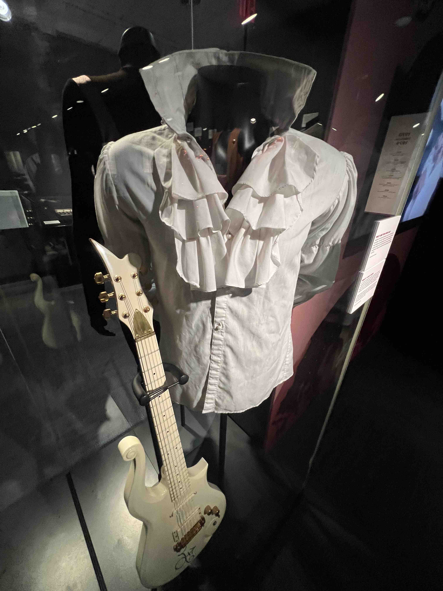 Prince Purple Rain shirt and “Cloud†guitar
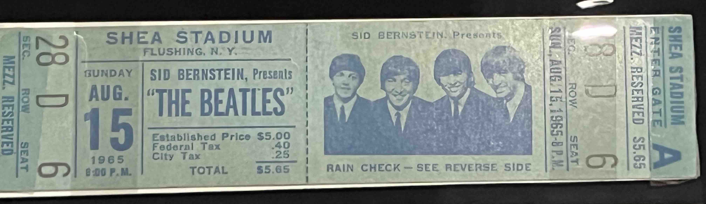 Beatles’ Shea Stadium concert ticket
 Buddy Holly letter (1957)
Buddy Holly letter (1957)
🔠back to top
Austin Central Library¶
PyTexas was held in the gorgeous Austin Central Library, a tourist destination in its own right.
 The stunning rooftop garden with a view of the Austin skyline and Colorado River.
The stunning rooftop garden with a view of the Austin skyline and Colorado River.
🔠back to top
May¶
Gym¶
Last year, I’d never been in a gym before and was afraid to go. My friend DeAnna Troutman Anaya talked me into getting started.
A few years ago, she found out that she was on her way to having debilitating illness. She was able to avoid it by getting fit. She regularly lifts weights and has an impressive physique. She is redefining what it means to be a grandmother.
When I started using an elliptical, I limited myself to ~70 steps per minute. Otherwise, I would get winded. Now, I am regularly up to 120+ steps per minute, and when life gets busy for a short time, and I don’t exercise regularly, I am able to get back to my top performance within just a few sessions. I would love to know the science behind it.
 One day too many
One day too many
I returned to the gym regularly on May 2nd and added light weight lifting. In combination with aerobic activity, I’ve read that weight lifting has a number of benefits as we age: bone density, muscle mass, coordination and balance, general health.
By June 1st, I’d already had a personal best on the elliptical and broke that record many times over throughout the year.

According to my chef friend Sheldon, having a personal trainer has been life-changing for him in his life and work. It is something I am considering.
🔠back to top
DjangoCon US Featured Post¶
I was featured on DjangoCon US social media accounts, along with current Django Fellow Natalia Bidart and former and current DEFNA Board Members Drew Winstel, Tim Schilling, and Koji Idressa.
🔠back to top
PyCon US 2024¶
PyCon US 2024 took place from May 15-23 in Pittsburgh, Pennsylvania.
Thank you to Bernat Gabor for encouraging me to go! It was well worth it.
After the conference, I did some “heavy lifting†from conference connections made. A few examples:
Based on a conversation with Black Python Devs Founder K. Jay Miller, I liased with DEFNA to further the interests of Black Python Devs at DjangoCon US 2024
Based on a conversation with PyTexas Chair Mason Egger, I made PyTexas sponsorship pitches to interested parties
Based on a conversation with Quansight Labs Co-director Tania Allard, I attempted to rekindle a prospective open source process within my network
🔠back to top
June¶
PyCon US 2024 Recap and Hacker News¶
I wrote a deep dive of my PyCon US 2024 experience.
As my recap reflects, as far as talks go, I was particularly interested in major new developments around free-threading, per GIL subinterpreters, and JIT compilation.
Not long after I posted my PyCon US 2024 Recap on social media, I got a rave review from Kenneth Reitz, PSF Fellow and author of Requests Python package (#5 for PyPI downloads, over 10,500,00 downloads/day, depended on by over 2,900,000 repos).
Unbeknownst to me, Neil Stoker, Senior Director of Ratings AI at Fitch Ratings, had submitted the recap to Hacker News.
He tweeted to me that it was trending there. It had reached #2!
#2 on Hacker News… so close to #1. Beaten out by Tim Bray’s sofa parable, lol
 #2 for nearly an hour
#2 for nearly an hour
On the “front page†for about 12 hours
It eventually reached 186 points and 91 comments
While the recaps I have written of smaller Python/Django conferences have been widely shared in their own right, I believe that the universal appeal of PyCon US drove the massive popularity of this post.
The new Python Release Manager Hugo van Kemenade whom I had the pleasure of meeting at the conference included my recap as the must read recap in his conference recap roundup.
I also made it to Django Co-creator Simon Willison’s blog! Thank you to Simon for the kudo.
Validation of my work among the world’s leading Python practitioners and global community means a lot to me.
It was also featured in Django News Newsletter Issue 236 and pip Trends Newsletter.
 Thank you to the incredible Lacey for this sweet kudo!
Thank you to the incredible Lacey for this sweet kudo!
🔠back to top
DFW Pythoneers¶
After months of good intentions, I finally committed to attending DFW Pythoneers meetup. It was a great time! I got to see Kevin Horn for the third time in two months and Broadus Jones for the second time in two months. :)
I really enjoyed Jim Vogel’s talk about Pydantic, MongoDB, Beanie, and FastAPI.
🔠back to top
Summer Fun for My Nieces¶
In keeping with my plan to do more random, fun things for my nieces, I asked my sister what I could buy them for summer.
Based on her suggestion, I bought them:
Four X-Shot fast-fill water blasters
24 reusable, magnetic, fast-fill water balloons
I’ve been told the water balloons were a big hit, no pun intended.
🔠back to top
Innovation Week Global Hackathon¶
It was an amazing Innovation Week at JPMorganChase. I attended presentations Monday, Tuesday, and Wednesday, then finished the week off by participating in the Global Hackathon for the second year in a row.
My first project fell through. Feeling disheartened, Wednesday night, I looked through the projects again and saw a new one that was highly relevant to my work in the Databases Department. I reached out to the team and joined. It felt meant to be. My team was inspiring! I learned a lot and made some new friends.
 Here I am with my Plano-based hackathon teammates.
Here I am with my Plano-based hackathon teammates.
🔠back to top
July¶
Wellness Screening¶
Throughout July, August, and September, I took advantage of JPMorganChase employee health and financial services benefits.
After completing certain wellness activities, JPMorganChase will pay money into my MRA (Medical Reimbursement Account) and reduce my monthly insurance premiums. Although it’s not the primary reason to do it, it’s a nice incentive.
In July, I did my wellness screening. My blood pressure and body mass index (BMI) were calculated, and a fingerstick was used to calculate my blood sugar, cholesterol and triglycerides. My bad cholesterol had gone down 22 points since my 2023 screening.
🔠back to top
August¶
CFP Connect Panel¶
CFP Connect hosted a women in leadership panel. The world has enough manels. Bring on the wanels.
 Women in Leadership Panel
Women in Leadership Panel
🔠back to top
Financial Advisor¶
Using employee financial services benefits, I began working with a JPMorganChase personal advisor and private banker.
What I learned from them has helped me understand the larger picture better, create a longterm financial strategy across all of my assets, and better leverage employee benefits.
I also conveniently paid off my student loans.
🔠back to top
September¶
Preventative Care¶
Continuing with my wellness activities, for the first time, my doctor and I created a comprehensive, longterm annual preventative care plan. I completed a full physical, mammogram, colon cancer screening, and got up-to-date with my vaccinations. I feel fortunate to be “healthy as a horse.â€
To improve my longterm health, I’ve cut back on animal products and now “eat the rainbow†often at home and work.
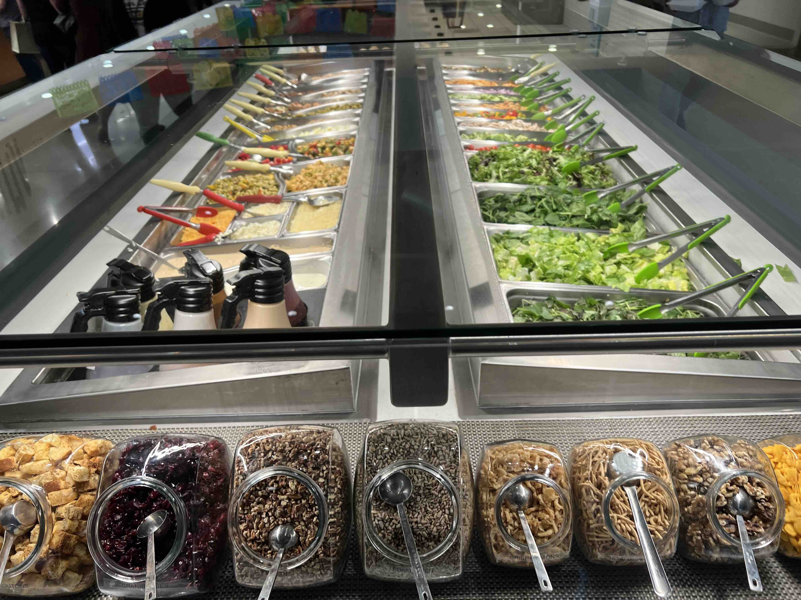 Beautiful salad bar at JPMorganChase Plano
🔠back to top
More Good Luck¶
Last year, I had a modest rent increase. I’ve been assuming my rent would increase very year until I’d simply be priced out of renting. This year, to my surprise, my rent was significantly lowered. With so much bad news in the world, it’s nice to know it’s not all doom and gloom.
🔠back to top
DjangoCon US 2024¶
I attended DjangoCon US from September 22-27. It was an absolute blast. I wrote a recap about it.
Thank you to Django News for featuring it in Issue 254!
Standing ovation for organizers
🔠back to top
October¶
CFP Connect and Mo¶
October CFP Connect served as a forum to get to know new Head of CFP Mo El-Gammal who brings extensive experience from Amazon and Microsoft. It was exciting to see an initiative I started become a platform this powerful.
 A few of us stragglers enjoyed a photo with Mo after the event
A few of us stragglers enjoyed a photo with Mo after the event
🔠back to top
CockroachDB Day¶
As my team’s CockroachDB expert, I had the pleasure of attending a JPMorganChase Plano CockroachDB Day.
🔠back to top
Sightseeing in Dallas¶
On October 4, I spent the day sight-seeing in Dallas. I went to the Dallas World Aquarium, the Sixth Floor Museum, Terry Black’s Barbecue, then the Dallas Zoo.
🔠back to top
Dallas World Aquarium¶
The Dallas World Aquarium was unique and amazing. There were a number of awe-inspiring scenes and fun animals.
 Three story waterfall… wow!
Three story waterfall… wow!
Fish tunnel… can’t believe I took this photo. Magical!
A few years ago, I wrote some code to create artwork for the final project of a Stanford Python course. At the aquarium, I saw a scene that very much reminded me of a favorite “artwork†that my program made. It was a small aquarium filled with sea life from British Columbia.
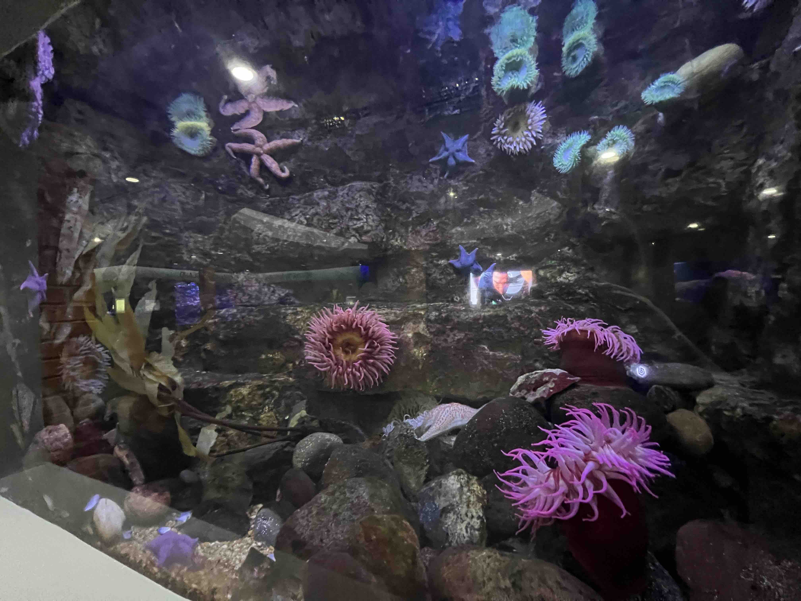 Sea life from British Columbia
 A favorite “artwork†my program made
A favorite “artwork†my program made
🔠back to top
Sixth Floor Museum¶
I had no idea what the Sixth Floor Museum would be like. The window where Oswald allegedly stood is behind a glass display. It was surreal to stand at the window nearest to it and look down at a perfect view of the motorcade route below.
 Route simuation
Route simuation
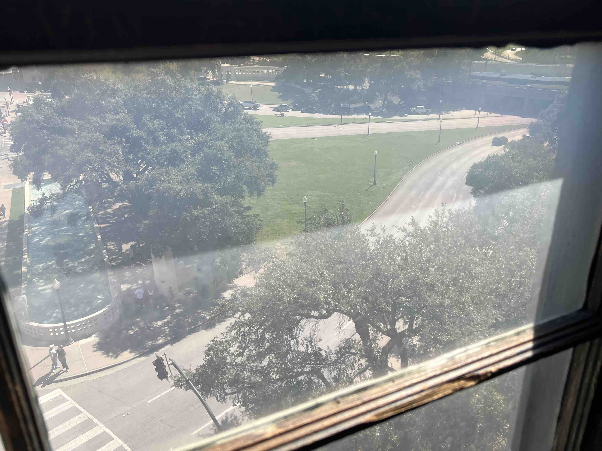 The route
🔠back to top
Terry Black’s Barbecue¶
After trying the world famous Franklin’s Barbecue in Austin in April, I had the pleasure of trying Terry Black’s Barbecue. Terry Black’s Barbecue was a very different experience, but also great. The approaches of either establishment were very different!
Franklin’s Barbecue
Slow moving line with “last man standingâ€
Slow, personal attention at the counter
High quality, melt in your mouth brisket
Quiet, small restauraunt atmosphere
Terry Black’s Barbecue
Fast moving line
Fast service at the counter
High quality, barked brisket with more fat
Large, loud, hall-like atmosphere
The perfect barbecue restaurant would be Franklin’s Barbecue brisket sold with the fast service and ambience of Terry Black’s Barbecue.
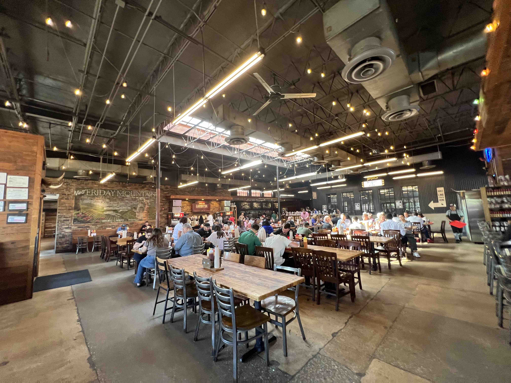 Terry Black’s Barbecue
 Brisket sandwich, green beans, and a Big Red (haven’t had one of those in years!)
Brisket sandwich, green beans, and a Big Red (haven’t had one of those in years!)
🔠back to top
JPMorganChase Dallas Zoo Employee Night¶
JPMorganChase Plano rented out the Dallas Zoo for an employee night. I had a really fun time! Thank you to everyone who made it unforgettable!
Feeding a giraffe
A hand-drawn caricature of me
🔠back to top
Cookbook¶
My distant relative Kelly Cline is a talented quilter who shares her quilting adventures through her Facebook account and sells products through her online shop. I saw that she was selling a limited number of cookbooks authored by our mutual cousin Bonnie who is said to be a fantastic cook. The cookbook is full of great family and German recipes from the Russell, Kansas area where my Volga German ancestors of the Michel and Reinhardt Families settled. I couldn’t resist buying one and having it sent to my sister and her husband who are avid cooks and also love German food. They’ll try some recipes and cook a good one when I visit.
 A few of the German recipes
A few of the German recipes
🔠back to top
Winter Fun for My Nieces¶
While looking through popular brainteaser toys, I came across a couple that I couldn’t resist buying for my nieces:
A Learn & Climb Mega Magic Kit for kids with 100s of tricks of all skill levels and a tutorial video
Kanoodle, a best-selling educational game for all ages
🔠back to top
DjangoCon US 2025 Venue Selection¶
Identifying a DjangoCon US 2025 venue has been a challenge this year due to affordability.
Fellow DEFNA Board Member Adam Fast gave a lightning talk about it at DjangoCon US 2024. The community answered the call by submitting a number of proposals.
Fellow Board Member Tim Schilling and I collaborated to create an Excel spreadsheet analyzing the options. Reading through and disecting all of the proposals has enabled me to internalize the data and take a more active role in the conversation around venue tradeoffs.
🔠back to top
November¶
November was a month for presentations. I gave three important ones within a week!
JPMorganChase PowerUp Conference Presentation¶
I had a blast presenting at JPMorganChase Plano PowerUp Conference with my team. It was my first time presenting there and a great experience.
Me presenting at PowerUp
 Me standing next to a PowerUp banner
Me standing next to a PowerUp banner
🔠back to top
JPMorganChase Advent of Code Leadership¶
My co-worker Julie and I co-lead JPMorganChase Plano Advent of Code for the second year in a row. This year, we expanded it from our department to the entire Dallas Tech Center. We teamed up with two Jersey City AoC co-leads to give an information session.
 Me and my wonderful co-worker Julie
Me and my wonderful co-worker Julie
🔠back to top
JPMorganChase DjangoCon US Recap Presentation¶
Considering the popularity of my PyCon US 2024 and DjangoCon US 2024 recaps, I am well-positioned to analyze industry trends.
I distilled my DjangoCon US experience into a DjangoCon US Recap presentation specific to JPMorganChase that I gave to my team, department, and will soon give to the Databases Leadership Team.
🔠back to top
Epson FastFoto FF-680W Scanner¶
Over the holiday break, I wanted to scan family photos and documents. After reading some reviews, I pulled the trigger on the highly-rated Epson FastFoto FF-680W. It is a very fast and powerful machine, and a game changer for scanning a large quantity of photos and documents well in a short amount of time.
Features
Fastest personal scanner on the market- able to scan a photo a second
300 dpi, 600 dpi, or 1200 dpi available
Able to consecutively scan a stack of 50+ pages
Auto-detects a two-sided photo or document and scans both sides at once
Photo auto-enhancement
Auto-saves a copy of both the original and enhanced scan
Document utility that can be used to create custom PDFs and other files
Ability to upload to Google Drive or Dropbox
Auto shut-off
Enhanced scan of me and my sister
Original scan of me and my sister
🔠back to top
Carriage Crossing¶
The Saturday before our family Thanksgiving, I finally made it to my favorite restaurant Carriage Crossing for their Thanksgiving special.
Oven roasted turkey and smoked ham, mashed potatoes and turkey gravy, stuffing, vegetable, cranberry sauce, dinner roll and cinnamon butter
🔠back to top
Two Year Work Anniversary¶
My two-year work anniversary happened on Thanksgiving.

🔠back to top
New Furnishings¶
After leasing furnishings for my apartment for a couple of years, I stopped the lease and started picking out my own.
I couldn’t resist buying a Ruggable Patchwork Boho rug on Black Friday. I like the multi-colors and warm, relaxing look, and it’s washable.
I went to an Ikea for the first time, and it was a wild experience!
I wanted to try out the Söderhamn sofa. It’s modular, washable, pretty comfortable, and can be informally converted into a sleeper. One three-section sofa can be a two-section sofa and separate chaise lounge or chair with an ottoman. I like the Tonerud Gray.
 Söderhamn sofa with an ottoman and chaise lounge
Söderhamn sofa with an ottoman and chaise lounge
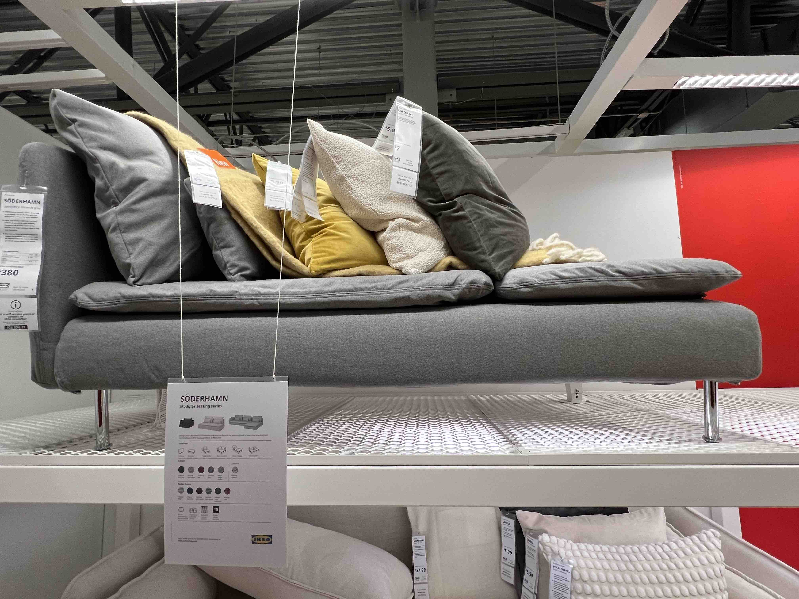 Söderhamn chaise lounge in Tonerud Gray… a soft, felt-like material
Not only was Ikea teeming with people, but I had no idea that while shopping in an Ikea, you can take a break and eat in a Swedish restaurant. Someone sitting next to me had a plate of Swedish meatballs with Swedish flags stuck in them. 🤣
I have been living a sheltered life.
 Eating at Ikea
Eating at Ikea
🔠back to top
December¶
Parting Thoughts¶
Thank you to each and everyone one of you, and there are many, who made my year special.
Although I am generally a person who maintains a stable outlook, it was a year of some high highs, and lower than usual lows. In addition to some health problems, the loss of my aunt two years ago, then my uncle this year had a major impact on my extended family. Throughout the year, I often had to prioritize health and family. I am hoping for a more normal 2025 in that respect.

Last photo with my Uncle Edward
These are the “good old days.†Live your best life.
 Me at PyCon US
Me at PyCon US
🔠back to top
More Favorite Snapshots Throughout The Year¶
Dallas Love Field Airport¶
On the road again… walking through Dallas Love Field Airport
🔠back to top
JPMorganChase Plano Chinese Lunar New Year Celebration¶
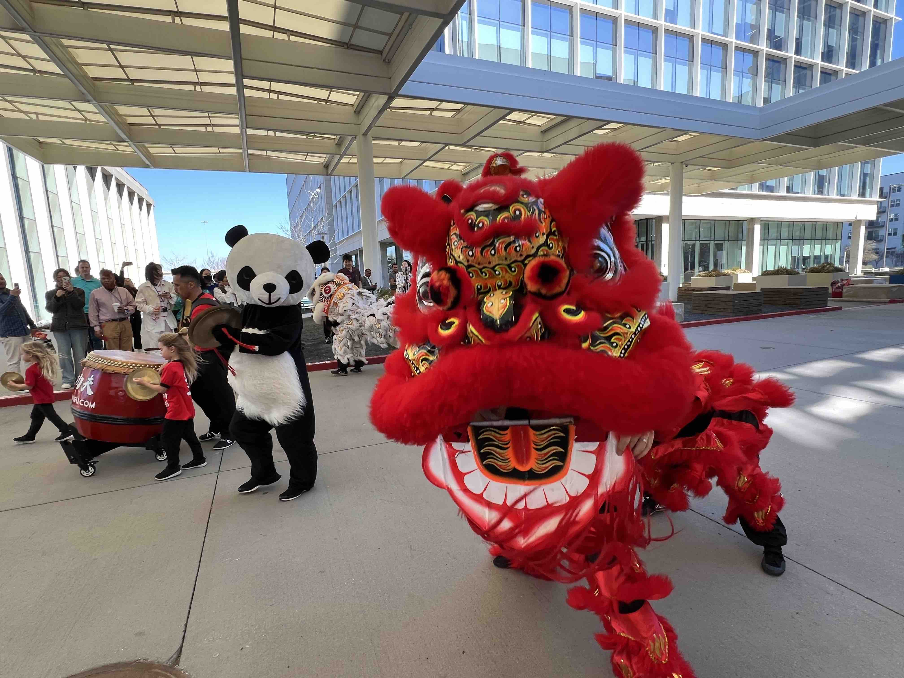 Parade
Cultural attire
🔠back to top
Tanganyka Wildlife Park¶
Mom turning the tables on me at Tanganyka
🔠back to top
Austin¶
 Texas State Capitol dome
Texas State Capitol dome
Moon rock collected during the Apollo 15 mission in 1971
 Desk where President Johnson signed the Voting Rights Act
Desk where President Johnson signed the Voting Rights Act
🔠back to top
Clouds¶
 Clouds in Legacy
Clouds in Legacy
🔠back to top
McClaren Sports Cars¶
McLaren Financial Services had an event at JPMC and brought in two McLaren cars. That is me standing with ~$750k worth of car.
A “lower-end†Artura
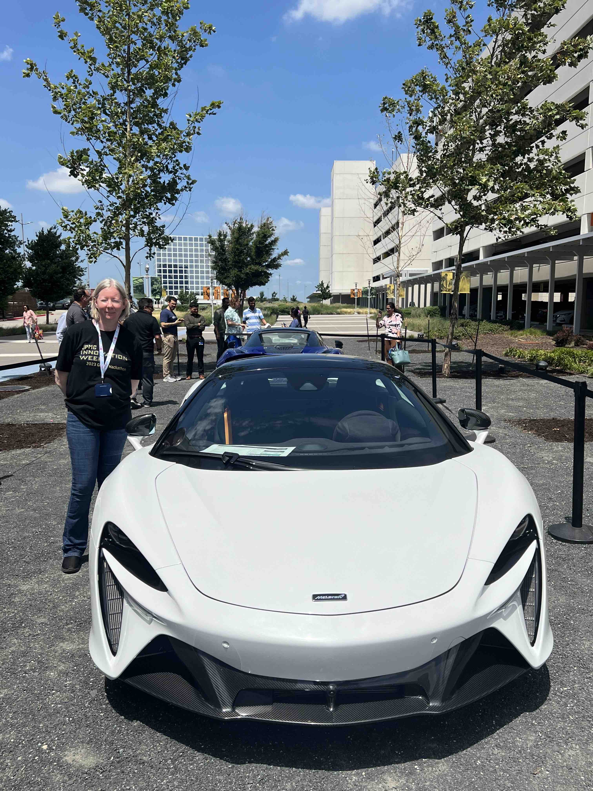 Me with the Artura
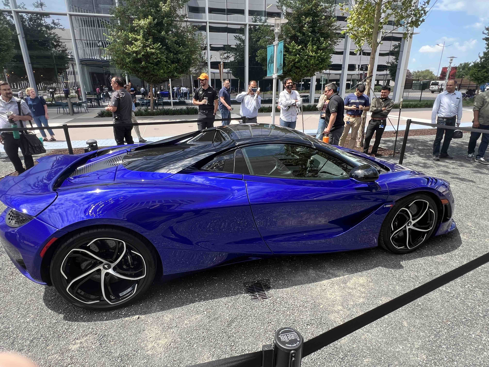 A 750S, the equivalent of an F1 car
🔠back to top
Yoshi Shabu Shabu¶
 Japanese hotpot with tonkotsu, pork belly, ramen, and goma sesame peanut, citrus ponzu, and roasted garlic teriyaki sauces
Japanese hotpot with tonkotsu, pork belly, ramen, and goma sesame peanut, citrus ponzu, and roasted garlic teriyaki sauces
Mango sake… first time trying sake!
🔠back to top
T Swirl Japanese Crepe¶
 Strawberry banana crepe: sliced strawberries, sliced bananas, custard cream, whipped yogurt, chocolate pearls, crushed pistachios
Strawberry banana crepe: sliced strawberries, sliced bananas, custard cream, whipped yogurt, chocolate pearls, crushed pistachios
🔠back to top
Luci’s Bakery¶
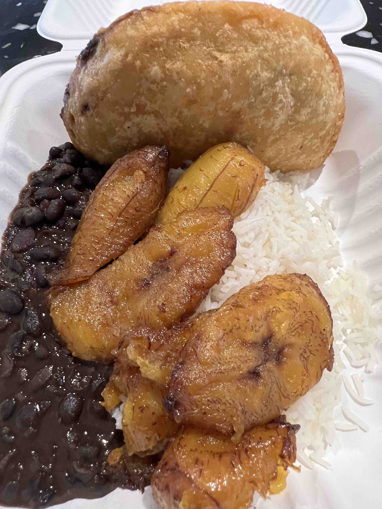 Venezuelan chicken empanada, rice, black beans, fried plantains
🔠back to top
Darna Mediterranean Eatery¶
 Saffron chicken kebab and mocktail mojito with strawberry flavor
Saffron chicken kebab and mocktail mojito with strawberry flavor
🔠back to top
Employee Appreciation Week¶
Me with Dallas Mavs and Frisco RoughRiders mascots at the Employeer Appreciation Week street party
Me lounging in a floating Chase logo… 3D street art by Jan Riggins
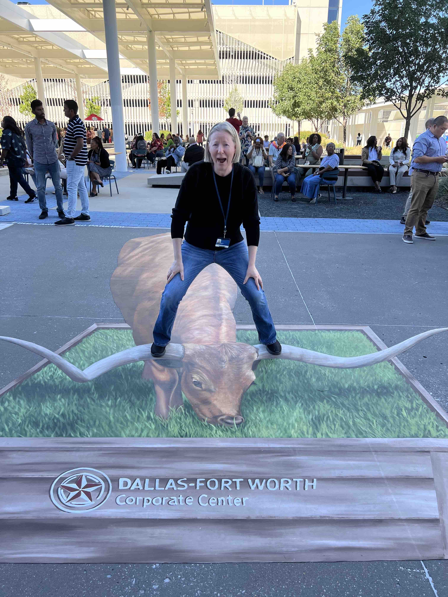 Me overtaking a longhorn
Me sitting next to a life-size thank you memo
🔠back to top
Diwali¶
 Me standing with co-workers wearing beautiful Diwali attire!
Me standing with co-workers wearing beautiful Diwali attire!
🔠back to top
Dallas World Aquarium Animals¶
 An ever-so-slow moving sloth
An ever-so-slow moving sloth
Love flamingos!
🔠back to top
Terry Black’s Barbecue Pit¶
“Pit powerâ€
🔠back to top
Dallas Zoo¶
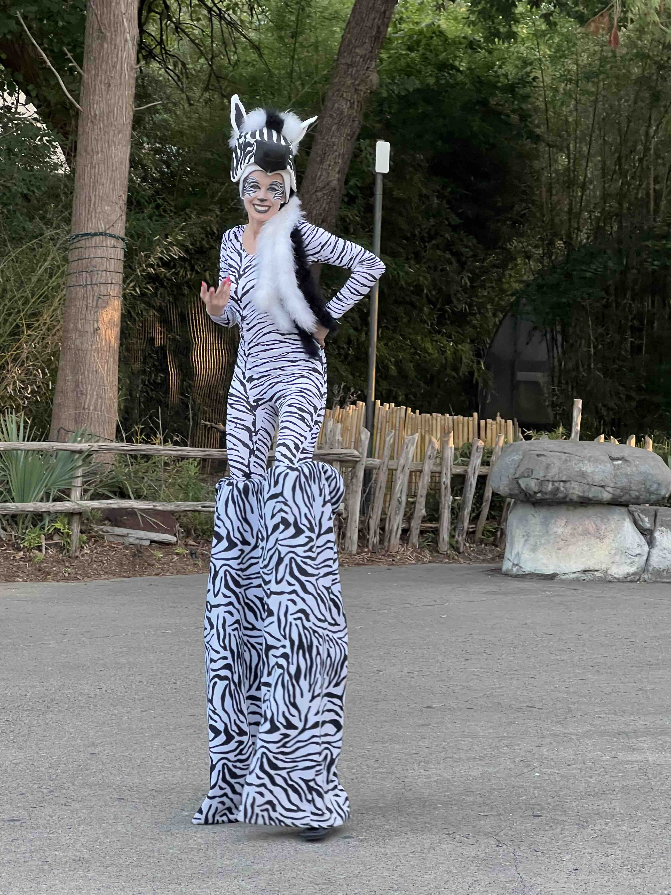 A performer on stilts dancing to reggae
 A perfect chocolate milkshake
A perfect chocolate milkshake
🔠back to top
Yoshi Shabu Shabu September¶
Japanese hotpot with tonkotsu, shrimp, ramen, and goma sesame peanut, citrus ponzu, and roasted garlic teriyaki sauces
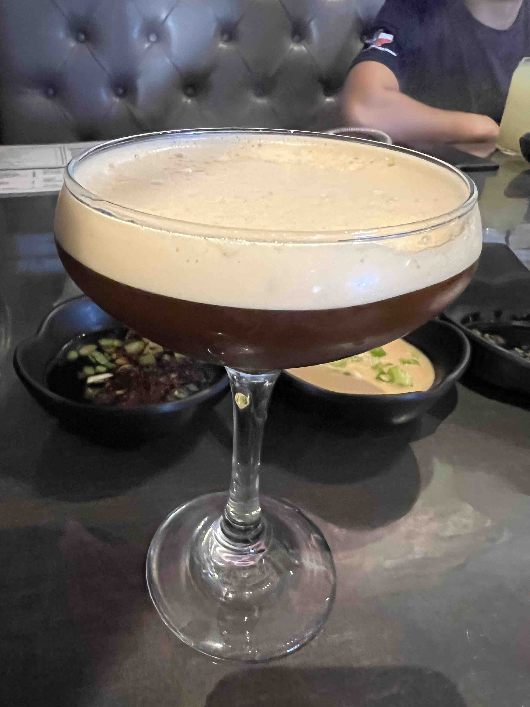 Spiked coffee
🔠back to top
JPMorganChase Plano¶
Main Street
 Morning
Morning
🔠back to top